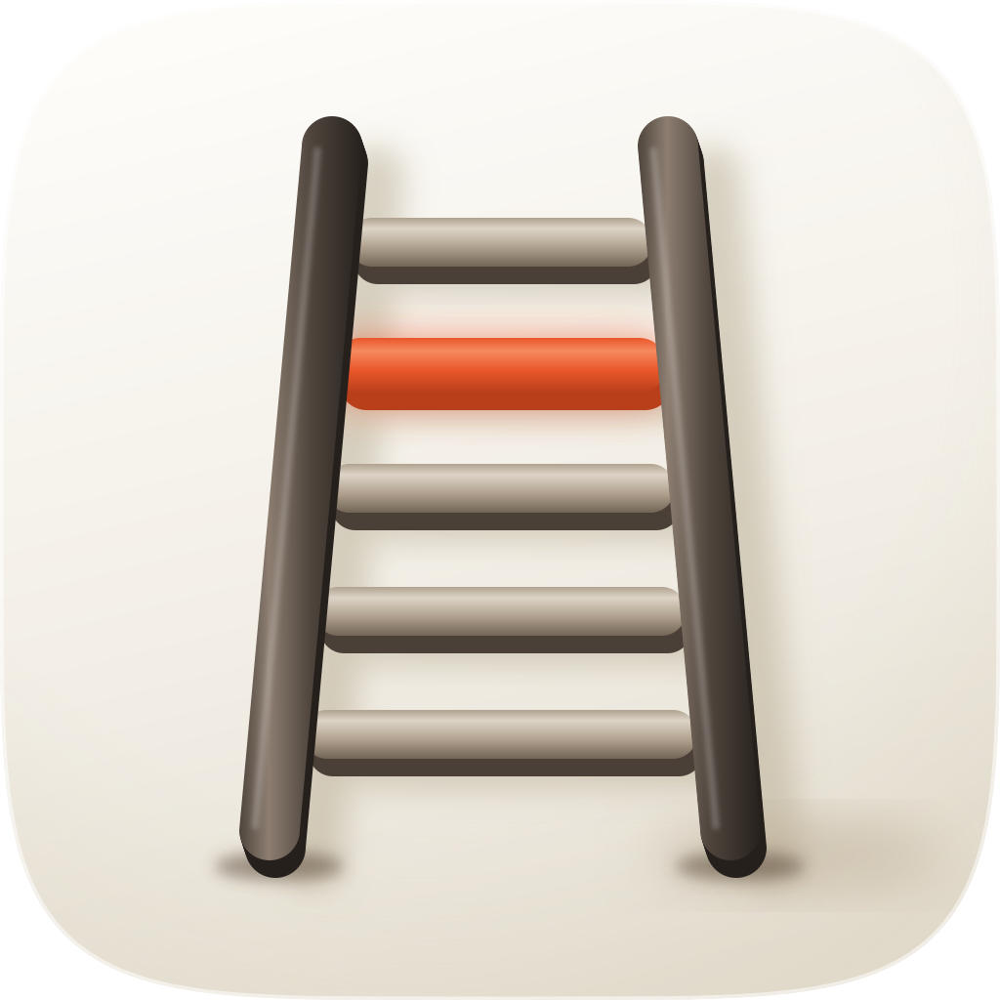
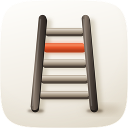
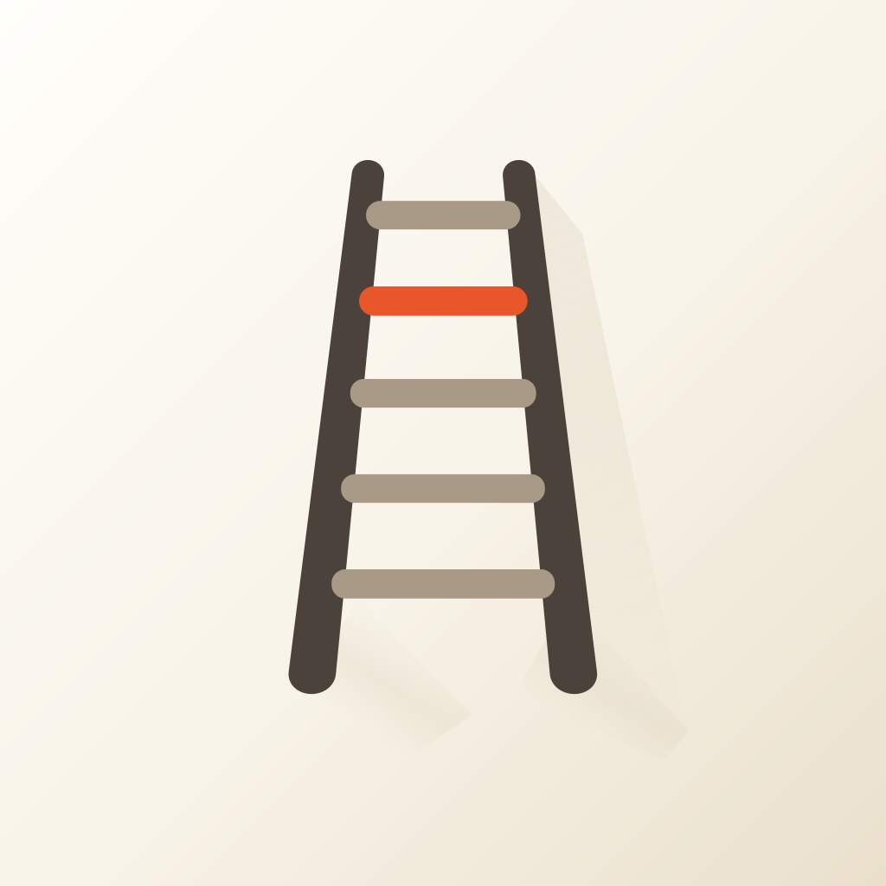
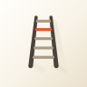
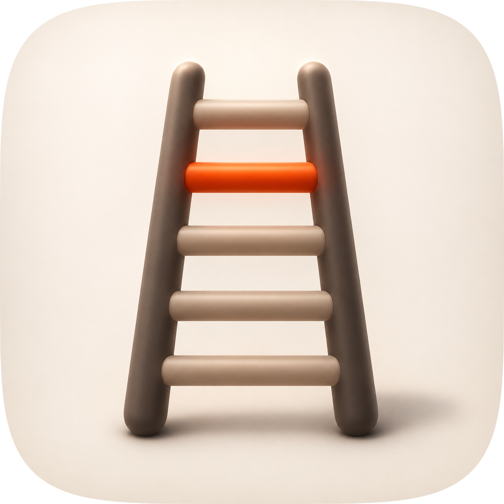
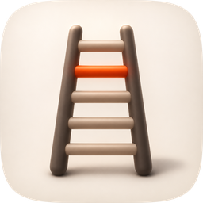

| Take | Hero at 1024, then renders at 128 / 64 / 48 / 32 / 16 css px (2× retina sources), plus the 16px squint magnified | Rubric | Verdict |
|---|---|---|---|
| A · icon.svghand-authored layered SVG, built by build_icon.py. SHIPS |   |
11 / 12 | Passes 1 to 4 on the renders: clipped to the family squircle, optically centred on x=512, the filled silhouette is a ladder, and at 16px the two rails and the ember rung all survive. One light from top left, one hue family plus the ember, rails at about 7:1 against the porcelain. The tube shading on rails and rungs and the pooled shadow at the right foot were rebuilt from take C. Loses a point on 8, depth: the cast shadow of the rungs is faint, so the ladder sits on the tile more than it stands in front of it. |
| B · icon-engineB-arrow-91ed41.svgArrow vector take |   |
8 / 12 | Same idea, drawn independently, and it confirms the silhouette: five rungs, one ember, slight taper. Lost because the ladder fills about 35% of the tile where the family sits at 55 to 65%, so at 16px the ember rung is two pixels of pink; the ground is a flat square with no cushion rim; and the shadow is a hard flat polygon. Fails 4, 8, 9 and 11. Nothing was salvaged; its proportions matched the master's already. The generator returned four concatenated documents, and the first is kept. |
| C · icon-engineC-raster-a7c9c4-masked.pngGPT Image raster, corpus-referenced, masked with the family squircle |   |
10 / 12 | The richest material of the three: rails and rungs read as lit tubes with a bright shoulder and a shaded belly, the ember rung glows onto the rails, and the shadow pools to the right. Lost because it is a flat raster, so it fails 10, variant robustness, by construction, and because its rails are a mid taupe at about 3:1 where the family's objects are dark, which makes it the palest object on the shelf. Its tube shading, glow strength and shadow pool were rebuilt into the master. |